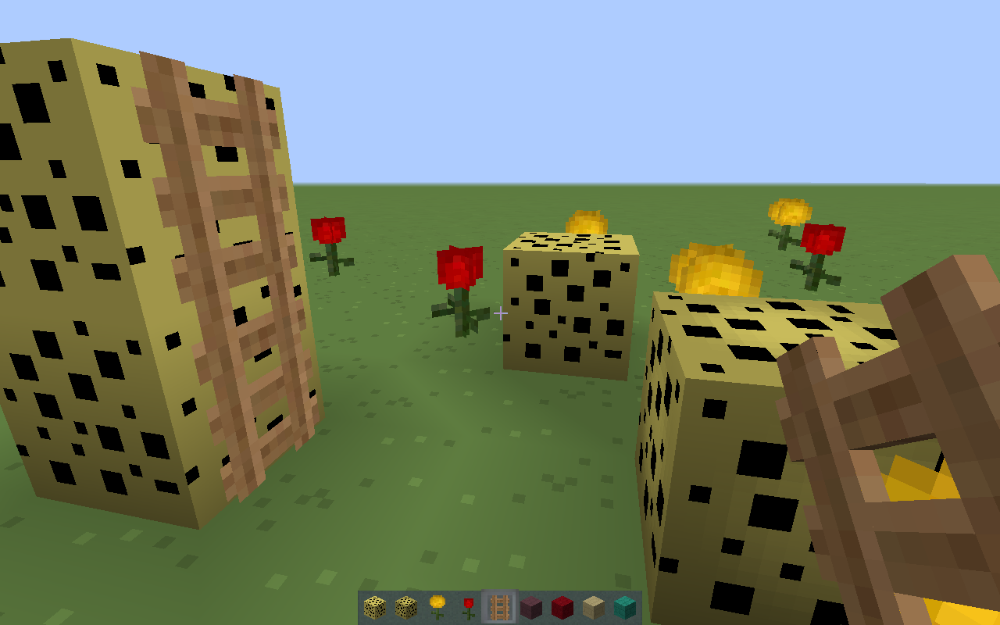
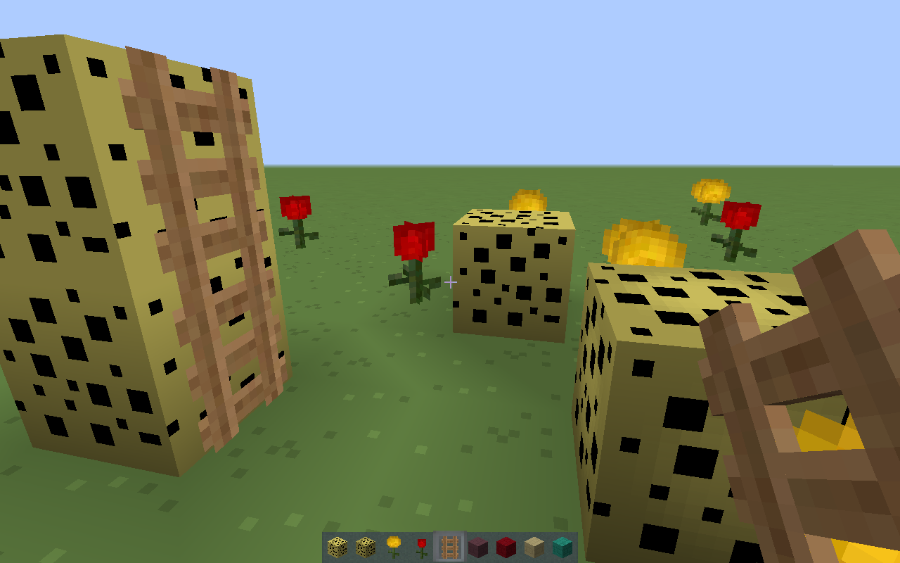

Textura CrazzyMCPE
Minecraft(Android)
 


Actualizacion v24
Como ya mencioné esta es una actualización para Minecraft(Pocket)
Lista de cambios
las nuevas texturas y cambios pricipales son:
Cambios generales
Nueva interfáz y backgrounds
Bloques
Vidrios de colores
Bloque de ladrillo
Bloque de ladrillo de piedra
Bloque de ladrilo del end
Bloque de ladrillo del nether
Bloque de ladrillo rojo del nether
Bloque de ladrillos del oceano
Mejorado el bloque de nieve
Agregada la esponja
Agregada la esponja mojada
Mejorada la textura de la caña
Bloque de piedra
Mejorado el bloque de mineral de cuarzo
Mejorado el bloque de arcilla
Agregado el bloque de tierra estéril
Bloque de diamante
Tierra de cultivo
Flor de diente de león
Flor rosa
Hornos
Hielo transparente
Mejorado el bloque de paja
Mejoras en el bloque de hielo comprimido
Agregadas las hojas de los arboles
Mejoras en las hojas de los arboles
Escalera
Bloque de lapis lazuli
Mejorado el bloque de netherrack
Mejorado el repetidor
Bloque de diorita pulída
Pistón
Pistón pegajoso
Mejorado el pasto alto
Mejorado el pasto alto doble
Mejorado el bloque de hierro
Flor syringa
Chorus plant
Mejorada la piedra labrada
Cofre
Cofre doble
Cofre trampa
Cofre doble trampa
Cofre navideño
Cofre del end
Mejorado el bloque de piedra musgosa
Camas de colores
Bloque de oro
Bloque de redstone
Bloque de granito pulído
Yunque
Flor daisy
Mejorada la grava
Items
Manzana
Manzana dorada
Hueso
Picos mejorados
Huevo
Hachas
Mejoras en las espadas
Azadas
Mapa
Mejorado el item del letrero
Bola de slime
Bola de nieve
Mejorado el item del trigo
Mejorado el item de la caña
Cubeta vacía
Cubeta de agua
Cubeta de leche
Cubeta de agua